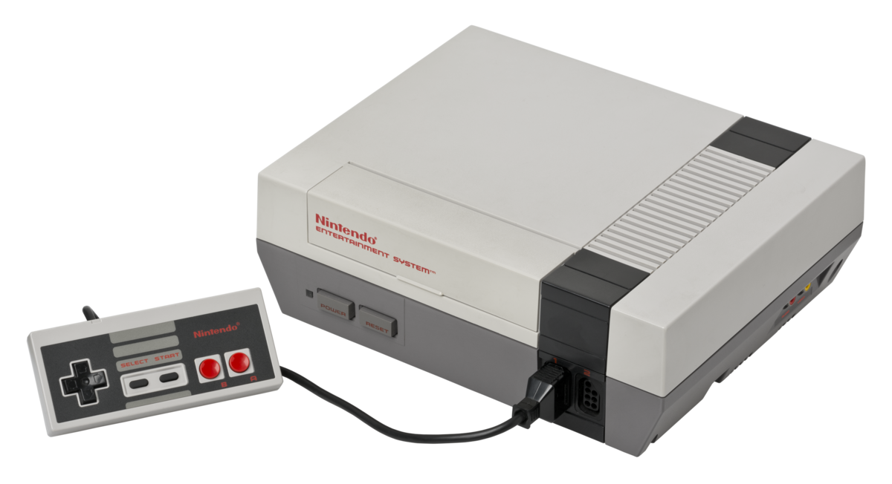

Avec le lancement du magnifique Donkey Kong en 1981, la société a commencé à marquer sa place dans l'industrie du jeu vidéo. Cependant, ce n'était que le début. L'introduction de la Nintendo Entertainment System (NES) en 1985 a changé la donne, établissant Nintendo comme l'une des forces motrices derrière la renaissance du marché du jeu vidéo après le krach de 1983.
Jouez ensemble où et quand vous voulez!
Découvrez l'évolution passionnante de Nintendo à travers les années, avec un focus particulier sur l'innovante Nintendo 3DS.
Les Premiers Pas dans le Monde du Jeu
Au fil des décennies, Nintendo a su s'adapter aux changements de l'industrie du divertissement. Des débuts modestes en tant que fabricant de jeux de cartes, l'entreprise a élargi ses horizons en explorant divers secteurs tels que les jouets, les hôtels, et même la taxi-distribution. Cependant, c'est dans les années 1970 que Nintendo a fait son entrée dans le monde du jeu vidéo.
L'Ère des Jeux Vidéo
Réinventer le Jeu avec la Wii
Les années suivantes ont été marquées par une série d'innovations audacieuses. La sortie de la Wii en 2006 a révolutionné le jeu en introduisant des commandes de mouvement intuitives, ouvrant ainsi le monde du jeu vidéo à un public plus large que jamais.

Le Triomphe de la Nintendo 3DS
Et puis, en 2011, la Nintendo 3DS est née. Cette console portable a captivé les joueurs du monde entier avec son affichage en 3D sans lunettes et une bibliothèque de jeux captivants. La Nintendo 3DS a continué la tradition de Nintendo en matière d'innovation et a solidifié la position de l'entreprise en tant que pionnière incontestée de l'industrie du jeu.